Leia a síntese.
No alto de cada seção, uma frase diz a regra. Quem tem pressa para aí.
Caderno BIM CGI-CCS-01 · R02
CGI-CCS-01 / Caderno BIM / R02 / Outubro/2026
Quem projeta, mede ou mantém a rodovia precisa achar a informação certa na primeira tentativa. Este Caderno combina, entre todos os que participam, onde ela nasce, como se chama e por onde passa.
No alto de cada seção, uma frase diz a regra. Quem tem pressa para aí.
Prazo, código, formato e estado estão no corpo da seção, com número e data.
Modelo, formulário e tabela ficam nos cinco volumes de anexos, com link no fim.
01 / Objetivos
Antes do primeiro arquivo subir ao CDE, vale saber o que a concessão espera dele.
Estabelecer as diretrizes, padrões e requisitos técnicos para a gestão da informação mediante o uso da Modelagem da Informação da Construção (BIM) em todos os projetos, obras e atividades de gestão de ativos da Concessão Rota dos Sertões, Lote 02 (BR-116/PE, BR-116/BA e BR-324/BA, extensão aproximada de 502,0 km), outorgada à Concessionária 116 Sertões S.A. (sociedade de propósito específico da Nova Infra Invest) pelo poder concedente (Agência Nacional de Transportes Terrestres, ANTT).
O presente Caderno BIM tem por finalidade padronizar e potencializar a produção, a troca e a governança da informação ao longo do ciclo de vida dos ativos rodoviários da concessão, desde os estudos e projetos (funcional, anteprojeto, executivo) até a construção, o As Built e a operação/manutenção, alimentando o Sistema de Gestão de Ativos da Concessão (SIGACO) e a certificação ISO 55001.
De forma específica, o Caderno BIM objetiva:
Regime operacional: BIM Nível 2. A Concessão opera sob o regime colaborativo de BIM Nível 2: equipes disciplinares independentes produzem modelos próprios, combinados em modelos federados e geridos em um Ambiente Comum de Dados (CDE), com requisitos de informação formalizados (EIR) e troca por padrões abertos (IFC, BCF, IDS). Essa é a linhagem conceitual que parte do BS 1192:2007, consagrou-se no mandato britânico de 2016 e foi internacionalizada pela ISO 19650, cuja fundamentação está consolidada no Anexo 5.1.
A trajetória completa até o Gêmeo Digital está na Seção 2. Cada leitor, porém, tem um caminho curto; o quadro sugere onde começar e onde aprofundar.
| Se você é... | Comece por... | Aprofunde em... |
|---|---|---|
| Licitante ou projetista | Seções 1, 8 e Anexo 3.4 (modelos de PEB) | Seções 9 a 11 |
| Contratada de obras | Seções 1, 10.12 (entregáveis) e 11.6 (gatilho de pagamento) | Seções 12 e 16 |
| Serviço de levantamento de campo | Seções 12.2 a 12.4 e Anexo 3.4, modelo simplificado | Seção 10.6 e Anexo 4.1 (SUE) |
| Fiscal ou gestão de contrato | Seção 14 e formulários FR-BIM-08/09 | Anexo 2.5 |
| Órgão fiscalizador ou auditor | Seções 2, 16 e 20 (referências normativas) | Seção 10.3 e Anexo 2.5 |
A estratégia BIM da Concessão potencializa os investimentos de CAPEX e otimiza os custos de OPEX, provendo ambiente adequado ao investimento em BIM e à sua difusão em todos os setores. Os resultados esperados são:
02 / Roadmap de maturidade BIM CRS (Estágios 1 a 4)
Ninguém chega ao gêmeo digital num salto. A maturidade sobe em quatro estágios, com critério de passagem em cada um.
A Concessão Rota dos Sertões adota uma escala própria de maturidade, os Estágios CRS, inspirada nos referenciais internacionais (modelos UK de níveis 0 a 3 e o Level of Information Need da ISO 19650), porém calibrada à realidade de uma concessão rodoviária federal. Cada estágio define metas em pessoas, processos e tecnologia. A Figura 1 alinha os Estágios CRS às Fases IDS (Seção 11.4) no mesmo horizonte temporal.
| Estágio | Nome | Foco | Horizonte |
|---|---|---|---|
| Estágio 1 | Padronização | Caderno BIM, templates, classificação NBR 15965, CDE | Ano 1 |
| Estágio 2 | Integração | Modelagem multidisciplinar federada, clash detection sistemático, IFC 4.3 | Anos 1 e 2 |
| Estágio 3 | Operação conectada | AIM → SIGACO, ISO 55001, quantitativos 5D, planejamento 4D | Anos 2 a 4 |
| Estágio 4 | Gêmeo Digital | Sincronia IoT, análise preditiva (IA), gêmeo federado | Anos 4 a 6 |
A correspondência entre os Estágios CRS e a linhagem histórica dos níveis BIM é a seguinte; a leitura conjunta com as Fases IDS está na Figura 1, adiante.
Linha de base: BIM Nível 2. A concessão estruturou-se já em regime colaborativo com CDE, modelos federados e EIR. Os Estágios CRS descrevem o aprofundamento desse regime até o limiar do Nível 3, conforme o mapeamento a seguir.
| Estágio CRS | Correspondência com níveis BIM | Marcos característicos |
|---|---|---|
| Estágio 1, Padronização | Ingresso no BIM Nível 2 | CDE implantado, templates, classificação NBR 15965, EIR emitido |
| Estágio 2, Integração | BIM Nível 2 consolidado | Federação sistemática, análise de interferências, validação IFC e IDS |
| Estágio 3, Operação conectada | BIM Nível 2 maduro | Handover para o AIM, integração ao SIGACO, 4D e 5D em produção |
| Estágio 4, Gêmeo Digital | Limiar do Nível 3 | Sincronia com IoT, monitoramento de saúde estrutural de OAE (SHM), análise preditiva, gêmeo digital federado |
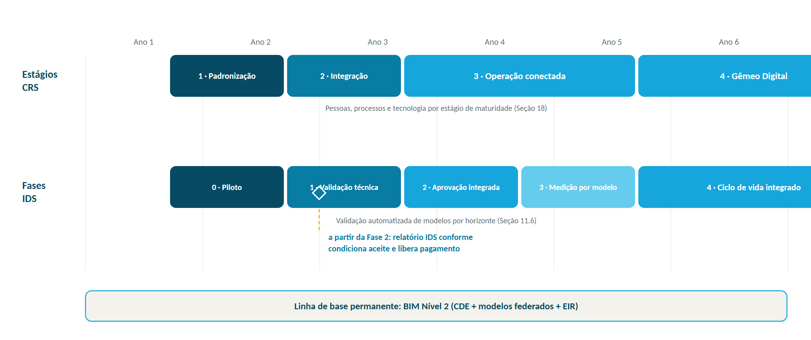
A terminologia britânica de níveis (0 a 3) foi aposentada pelo UK BIM Framework em favor da ISO 19650; este Caderno a emprega como referência histórica. Detalhe: Anexo 5.1.
A transição entre estágios é apoiada por plano de gestão de mudança, com comunicação, capacitação e monitoramento dos KPIs (Seção 14). A progressão entre estágios é deliberada, não automática, cada novo estágio é precedido por avaliação de prontidão conforme os critérios da Seção 11.4.
Retrospectiva de fase. Ao concluir cada Estágio CRS ou Fase IDS, a Concessão realiza retrospectiva da fase com exatamente três ações de melhoria, cada uma com responsável e prazo, registradas no CDE e acompanhadas pelo Comitê até o encerramento. A fase seguinte não inicia com ação pendente, ressalvada justificativa registrada.
03 / Localização da concessão
A Concessão Rota dos Sertões, Lote 02, compreende a BR-116 no estado de Pernambuco (aproximadamente 92 km, da divisa PE/BA ao limite com a BR-116/BA), a BR-116 na Bahia (aproximadamente 382 km, até o Trevo de Feira de Santana) e a BR-324 na Bahia (aproximadamente 28 km, acesso ao complexo metropolitano de Salvador), totalizando cerca de 502 km. A quilometragem oficial segue o padrão ANTT, no referencial SIRGAS 2000 (fusos UTM 23L, 24L e 25L), e os limites físicos estão documentados no PER Volume II. O corredor intercepta 16 municípios: Salgueiro, Cabrobó e Belém do São Francisco, em Pernambuco; Abaré, Chorrochó, Macururé, Canudos, Euclides da Cunha, Quijingue, Tucano, Araci, Lamarão, Teofilândia, Serrinha, Santa Bárbara e Feira de Santana, na Bahia.
O mapa apresenta o traçado dividido nas nove zonas do acervo de projetos (SE-003, revisão de 05/10/2026), a configuração de pista (linha dupla contínua = pista dupla existente; dupla tracejada = duplicação ou via nova prevista no PER), os pórticos Free Flow (SE-002), as bases operacionais nas posições da SE-001 e as sedes municipais, sobre limites municipais, unidades de conservação, manchas urbanas e cursos hídricos, conforme fontes oficiais. Zonas e segmentos: Seção 9.6 e Anexo 1.1.
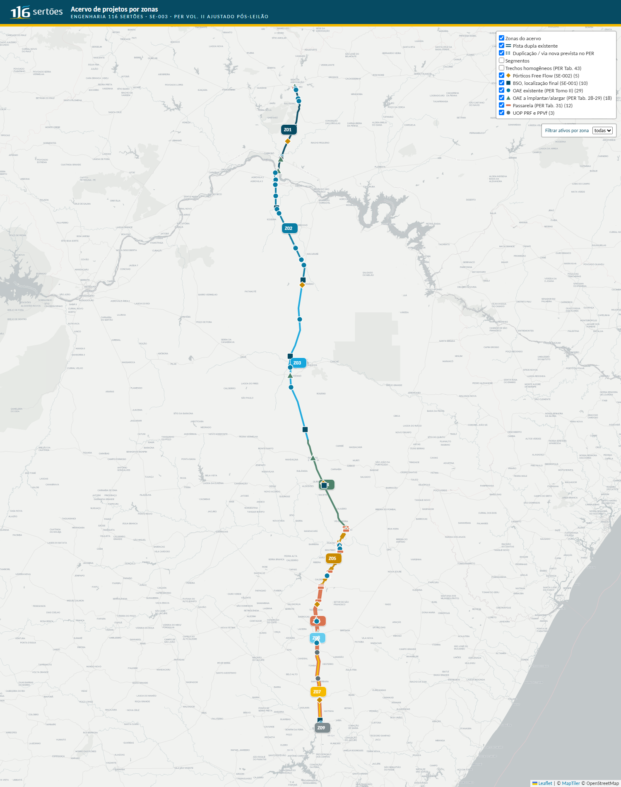
O quadro resume os principais ativos operacionais da concessão; as localizações exatas estão consolidadas no PER Volume II e na Tabela de Ativos do GIS corporativo.
| Tipo de ativo | Quantidade | Descrição |
|---|---|---|
| Pórticos de cobrança Free Flow | 5 | Caso-base da SE-002 nos pontos da Tabela 45 do PER; praça convencional só como contingência |
| Bases de Serviço de Operação (BSO) | 10 | Atendimento ao usuário, guinchos e apoio operacional; posições do Cenário Otimizado 5 km (SE-001) |
| Postos PRF/UOP | 2 | Unidades Operacionais da Polícia Rodoviária Federal |
| Postos de Pesagem Veicular fixos (PPVf) | 1 | Controle de peso de veículos de carga |
| Interseções principais | 20+ | Cruzamentos com rodovias e vias estaduais |
| Sedes municipais no corredor | 16 | Centros urbanos ao longo do traçado |
As frentes previstas no PER concentram o escopo sobre o qual este Caderno se aplica. Quantitativos, localizações e prazos por obra constam do PER Volume II e da Matriz PER × BIM (Seção 16).
| Frente | Escopo típico | Referência |
|---|---|---|
| Ampliação de capacidade | Duplicações e faixas adicionais na BR-116 | PER Vol. II |
| Contorno urbano | Projeto e implantação de contorno urbano; anteprojeto em até 6 meses após aprovação | Matriz PER × BIM (Seção 16) |
| Estoque de melhorias | Vias marginais, viadutos, passagens, trevos, correções de traçado, passarelas, acessos, travessias para fauna e ciclovias; projeto em até 18 meses | Matriz PER × BIM (Seção 16) |
| Projetos executivos programados | Projetos executivos pós-anteprojeto, conforme cronograma da concessão | Matriz PER × BIM (Seção 16) |
| Recuperação e conservação | Pavimento, obras de arte e dispositivos ao longo de toda a concessão | PER Vol. I e II |
04 / Abrangência
Este Caderno BIM aplica-se a todas as frentes da Concessão Rota dos Sertões, Lote 02 (BR-116/PE, BR-116/BA e BR-324/BA) e a todas as etapas do ciclo de vida dos ativos: estudos e projetos (funcional, anteprojeto e executivo), obras de ampliação de capacidade, obras de melhorias, recuperação, conservação, operação e manutenção, bem como à gestão dos bens reversíveis.
Estão sujeitos ao cumprimento deste Caderno:
As disposições deste Caderno não revogam nem substituem as normas e exigências regulatórias da ANTT, do DNIT e da ABNT, nem as cláusulas do Contrato de Concessão. Em caso de eventual conflito entre este Caderno e normativo legal ou contratual, prevalecerá o normativo legal/contratual, e o conflito deverá ser comunicado à Contratante para atualização deste documento.
05 / Termos e definições
Contratante e Concessionária designam, neste documento, a mesma entidade, a Concessionária 116 Sertões S.A.: usa-se Contratante nos atos contratuais e de definição de requisitos, e Concessionária no regime operacional da concessão. Contratada designa qualquer pessoa jurídica contratada para projetos, obras, levantamentos ou serviços sujeitos a este Caderno. Os demais termos seguem as definições abaixo e, no que não as contradisserem, as normas da Seção 20.
BIM Nível 2: Regime colaborativo adotado como linha de base: equipes disciplinares independentes produzem modelos próprios, federados em um CDE, com requisitos formalizados (EIR) e troca por padrões abertos (IFC, BCF, IDS). Fundamentação: Anexo 5.1.
Código de arquivo CCS: Identificador único do contêiner de informação: sigla CCS e níveis 2 a 5 da Portaria SUROD 12/2025, mais categoria, disciplina, sequencial e revisão (Seção 9.4). Zona e segmento ficam na pasta e nos metadados (Seção 9.6); a classificação ABNT NBR 15965 fica em PropertySet.
Zona, segmento e tramo: Níveis de localização do acervo de projetos (SE-003): zona = pacote de um squad de projetistas (Z01 a Z09 e Z00 Geral); segmento = obras próximas executadas em conjunto, com ano-âncora; tramo = uma obra ou edificação, código TTTNN (Seção 9.6; Anexo 1.1).
Estados da informação e gates (CRA): Condições pelas quais todo contêiner circula no CDE, com verificação (Check), revisão (Review) e aprovação (Approve) por papéis independentes (Seção 10.1.1; detalhe no Anexo 2.5).
PropertySets CRS: Conjuntos de propriedades corporativos, prefixo CRS-, obrigatórios nos modelos IFC 4.3 (grupos A a E e famílias por ativo; Anexo 1.2).
IDS (na prática deste Caderno): Instrumento de aprovação técnica por validação automatizada e, a partir da Fase 2 do roadmap, gatilho de liberação de pagamento (Seção 11).
06 / Atribuições e responsabilidades
As responsabilidades abaixo complementam, e não substituem, as obrigações contratuais estabelecidas entre a Contratante e cada contratada.
A organização dos papéis abaixo segue a ISO 19650-2. A designação formal dos responsáveis ocorre no PEB pós-contratual de cada empreendimento.
| Papel (ISO 19650) | Responsabilidade principal |
|---|---|
| Information Manager (Gestor da Informação) | Estabelecer e manter os processos de gestão da informação, o CDE e a conformidade com o EIR. |
| Task Information Manager | Coordenar a informação de uma tarefa/disciplina específica dentro do projeto. |
| Task Team Manager | Responsável pela entrega da informação de uma tarefa/disciplina, incluindo prazos e qualidade. |
| BIM Coordinator | Coordenar a modelagem multidisciplinar, a federação e a análise de interferências (clash detection). |
| Asset Information Manager | Manter o AIM na fase operacional, conforme as AIR e integrado ao SIGACO. |
07 / Requisito de informação da organização (OIR)
A organização pede pouco e pede sempre o mesmo: informação que sirva à operação por trinta anos.
Os Requisitos de Informação da Organização (OIR) descrevem a operação e a estratégia da concessionária e fixam os objetivos do BIM, a metodologia de trabalho e os critérios de medição e avaliação. Eles alinham as equipes ao modo de operação da organização, para que as decisões estratégicas se apoiem em informação clara e rastreável.
A hierarquia completa de requisitos, da estratégia ao plano de entrega, está resumida na Figura 2 e perpassa as Seções 7 a 10 e o Anexo 3.4.
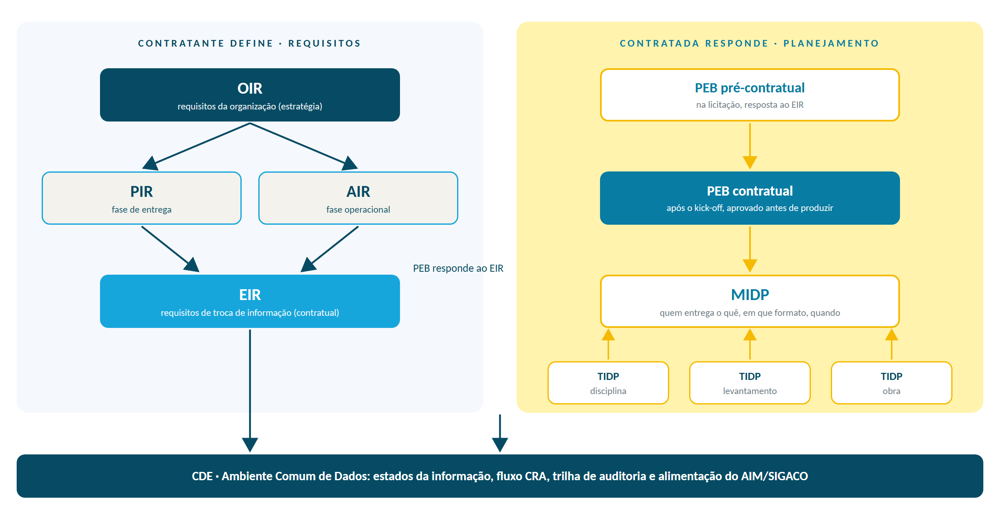
A Concessão Rota dos Sertões, Lote 02, outorgada à Concessionária 116 Sertões S.A. (sociedade de propósito específico da Nova Infra Invest), abrange as rodovias BR-116 nos estados de Pernambuco e Bahia e BR-324 na Bahia, totalizando extensão aproximada de 502,0 quilômetros, outorgada pela União, por intermédio da ANTT, no âmbito do Edital de Concessão nº 1/2026. Território, ativos e principais obras: Seção 3. Certificações de gestão e compromissos socioambientais: Seção 15.
A gestão da informação usa duas plataformas corporativas complementares: o CDE, dedicado a modelos, federação e comentários georreferenciados (BCF), e a plataforma documental, para memoriais, relatórios, quantitativos e correspondência formal. Os projetistas são inseridos no CDE após a reunião de início, com acesso à pasta do projeto e sincronização para trabalho local; os modelos são desenvolvidos diretamente no CDE. Detalhes de estados, fluxos e plataformas: Seção 10.1.
A reunião de início (kick-off), presencial ou por videoconferência, alinha documentos de referência, fluxo de análise, cronograma, marcos e responsabilidades, e orienta a elaboração do PEB contratual conforme o Anexo 3.4, que também define a declaração de experiência em BIM exigida da contratada. Cadência completa de reuniões: Seção 10.2.
Durante a elaboração do projeto, os trâmites de alteração são registrados no CDE por ambas as partes. Necessidades identificadas pela contratada seguem o formulário de Solicitação de Mudança de Projeto (SMP, FR-BIM-02), anexado ao apontamento; a Concessionária avalia impactos de prazo, custo e manutenção e responde em até 10 (dez) dias úteis.
Definido o que a organização precisa, o corte seguinte é por empreendimento: é o PIR que abre a Seção 8.
08 / Requisito de informação do projeto (PIR)
O projeto responde ao OIR com modelos, usos e um fluxo que todos os squads seguem do mesmo jeito.
O Requisito de Informação do Projeto (PIR) estabelece as diretrizes essenciais para a gestão eficiente do projeto e do ativo, fundamentais para embasar decisões estratégicas do empreendimento. Este capítulo detalha e exemplifica como a Contratada deve desenvolver seu PEB, orientando as metodologias a serem adotadas no projeto, desde os requisitos mínimos de modelagem BIM até o uso efetivo do BIM, a análise de interferências e demais aspectos críticos. Os modelos de PEB a serem utilizados pelas contratadas, nas fases de licitação e de execução contratual, constam do Anexo 3.4.
Identificação do projeto (código CRS, localização, contrato, tipo de intervenção), escopo, cronograma padrão, equipes, organograma, matriz RACI e requisito de treinamento compõem o PEB conforme os modelos do Anexo 3.4; os contatos vigentes da Concessionária e o cronograma padrão estão no CDE. Etapas não aplicáveis são inativadas, nunca excluídas, e novos escopos seguem a EAP definida.
A tabela de Requisitos Mínimos de Modelagem BIM, disponibilizada pela Contratante no CDE, apresenta as entidades essenciais para modelagem em cada fase do projeto, associadas a classificações IFC 4.3 e aos níveis de necessidade de informação (LOIN). Conforme a natureza específica do projeto, o conteúdo desta tabela pode ser ajustado ou expandido. É obrigatório modelar todos os elementos geométricos que contribuam para a geração de quantitativos, visto que estes serão obtidos diretamente do modelo BIM.
A tabela geral a seguir apresenta os usos do BIM definidos pela Concessionária. As descrições detalhadas e os objetivos de cada uso são disponibilizados no CDE.
| Uso do BIM | Fase predominante | Disciplinas envolvidas |
|---|---|---|
| Modelagem das condições existentes | Pré-projeto / Estudos | Topografia, Geotecnia, Utilidades |
| Autoria do projeto (design authoring) | Funcional → Executivo | Todas |
| Coordenação multidisciplinar | Funcional → Executivo | Todas |
| Análise de interferências (clash detection) | Funcional → Executivo | Todas |
| Extração de quantitativos | Funcional → Executivo | Todas |
| Orçamento associado ao modelo (5D) | Executivo | Todas |
| Planejamento e acompanhamento de obra (4D) | Executivo | Obras |
| Modelagem para construção (MAC) | Execução | Obras |
| Entrega As Built digital | Encerramento | Todas |
| Gestão do ativo (AIM → SIGACO) | Operação | Gestão de Ativos |
Como camada organizadora, a taxonomia internacional de propósitos de uso do processo BIM (gerar, analisar, coletar, comunicar e materializar informações) orienta o encadeamento entre disciplinas e a definição do nível de necessidade de informação de cada modelo; a versão detalhada está disponível no CDE.
A Contratada deve detalhar seu fluxo de trabalho em BIM, alinhando-o com os usos do BIM especificados neste Caderno, descrevendo claramente a metodologia adotada e apresentando um fluxograma. Deve indicar a estratégia de federação do modelo multidisciplinar e o fluxo de trabalho por disciplina para a produção e modelagem do projeto. No regime de BIM Nível 2, cada disciplina mantém a autoria do seu modelo; a federação combina os modelos disciplinares para coordenação e detecção de interferências, sem fundir as fontes de dados.
A Contratada deve apresentar sua estratégia para a análise de interferências, incluindo a matriz de interferência que descreve as interações entre as disciplinas do projeto. Deve especificar como os relatórios de interferência são apresentados no CDE (formato BCF), assegurando a comunicação eficaz dos potenciais conflitos. A análise deve abranger interferências com ativos existentes (condições existentes, utilidades subterrâneas e estruturas elétricas/telecom na faixa de domínio, ver Seção 12).
A EAP do modelo segue a localização do acervo de projetos: zona, segmento e tramo (SE-003, Seção 9.6) e, dentro do tramo, eixo projetado, disciplina, etapa e fase construtiva. A classificação ABNT NBR 15965 (Seção 9) é uma camada de propriedade do elemento, não um nível da EAP.
| Campo | Formato | Exemplo | Camada NBR 15965 |
|---|---|---|---|
| Zona | Z + 2 números (Z00 = geral) | Z05 | Tabela 4U, Unidades |
| Segmento | S + 2 números, com ano-âncora na pasta | S02 (pasta A05-S02) | Tabela 4U, Unidades |
| Tramo (obra) | tipo de obra POP 12 + 2 números | DPL01, PAS03, BSO07 | Tabela 4A, Espaços |
| Eixo projetado | PS/PN/MN/MS/TR | PN (pista norte) | n/a |
| Disciplina | 3 letras (Anexo 1.3) | HDR | Tabela 3P, Processos |
| Etapa (na disciplina) | 2 números | 02 | n/a |
| Fase de construção | P01/P02/P03... | P02 | Tabela 3R, Resultados |
| Classificação do elemento | propriedade | 3E-21 30 00 | Tabela 3E, Elementos |
A estrutura completa, com exemplos por disciplina e família de elemento, está no Anexo 1.3 e no CDE.
Exigir e planejar só funciona quando todos falam a mesma língua: a Seção 9 fixa essa linguagem.
09 / Classificação da informação (ABNT NBR 15965)
Um arquivo sem código é um arquivo perdido. Aqui está a gramática que dá nome a cada entrega.
A ABNT NBR 15965, Sistema de classificação da informação da construção, é a norma brasileira que estabelece uma estrutura comum para classificar a informação da construção, fundamentada na ABNT NBR ISO 12006-2. É a base normativa adotada pela Concessionária para garantir rastreabilidade, interoperabilidade e consistência semântica entre modelos, documentos, quantitativos e o sistema de gestão de ativos (SIGACO).
A ABNT NBR 15965 é à construção civil o que o SIRGAS 2000 é à cartografia: um referencial comum que permite que diferentes agentes falem a mesma língua ao longo do ciclo de vida do ativo.
A NBR 15965 é a implementação brasileira do framework da ABNT NBR ISO 12006-2 (equivalente ao OmniClass norte-americano e ao Uniclass britânico), em sete partes, compatível com o SINAPI.
A tabela a seguir mapeia as principais tabelas da ABNT NBR 15965 ao escopo da Concessão Rota dos Sertões, indicando exemplos de elementos rodoviários em cada uma.
| Tabela NBR 15965 | Escopo | Exemplos rodoviários |
|---|---|---|
| 2C, Produtos (recursos) | Produtos e insumos empregados na construção. | Concreto, asfalto, sinalização vertical, tinta, aço. |
| 2N, Funções | Função desempenhada pelo ativo/elemento. | Drenar, iluminar, sinalizar, suportar carga. |
| 2Q, Equipamentos | Equipamentos e componentes discretos. | Bombas, geradores, câmeras (CFTV), PMV, SCV. |
| 3E, Elementos | Elementos físicos da obra (estrutura, revestimento). | Pavimento, OAE, barreira metálica, muro de arrimo, duto. |
| 3P, Processos | Fases e atividades da construção. | Terraplenagem, pavimentação, instalação elétrica. |
| 3R, Resultados dos trabalhos | Resultados (produtos finais) por etapa. | Faixa adicional pronta, OAE entregue, passarela instalada. |
| 4U / 4A, Unidades e espaços | Unidades de uso e espaços funcionais. | Praça de pedágio, base operacional, PPD, faixa de domínio. |
| Grupo 5, Informação | Documentos e informação técnica. | Memorial descritivo, relatório de inspeção, IFC. |
A concessão usa dois códigos, com os mesmos cinco primeiros blocos. O código ANTT, definido no Anexo da Portaria SUROD 12/2025 (itens 1.1.1 a 1.1.7), identifica o projeto nas capas dos volumes e nomeia os arquivos protocolados. O código de arquivo CCS, interno, nomeia todo contêiner no CDE (prancha, memorial, modelo, planilha) e acrescenta categoria e disciplina em três letras, que o gerador de código (Anexo 1.3) converte para as siglas ANTT na montagem do protocolo.
| Bloco | Código ANTT (Portaria SUROD 12/2025) | Código de arquivo CCS | Exemplo |
|---|---|---|---|
| 1 Concessionária | 3 letras, definidas pela GEENG | igual | CCS |
| 2 Rodovia + UF | 3 números + 2 letras | igual | 116BA |
| 3 Localização | km inicial-km final (trecho) ou km+metros (pontual), no km do PER vigente | igual | 279-323 / 088+150 |
| 4 Tipo de obra | 3 letras, tabela 1.1.3 | igual | DPL / MON |
| 5 Tipo de projeto | 3 letras, tabela 1.1.4 | igual | EXO / OUT |
| 6 Classe / categoria | 2 letras, tabela 1.1.5 | 3 letras (MEM, PRC, MOD, REL, PLQ...) | DE / PRC |
| 7 Disciplina | 2 caracteres, tabela 1.1.6 | 3 letras (GEO, HDR, PAV, STR, TGT...) | H2 / HDR |
| 8 Sequencial | 3 números | 3 números ou código do segmento (modelos) | 006 / S02 |
| 9 Revisão | R + 2 números | igual | R02 |
Exemplo completo (prancha de drenagem do projeto executivo da duplicação Tucano-Araci):
Código ANTT: CCS-116BA-279-323-DPL-EXO-DE-H2-006-R02 · Código CCS: CCS-116BA-279-323-DPL-EXO-PRC-HDR-006-R02
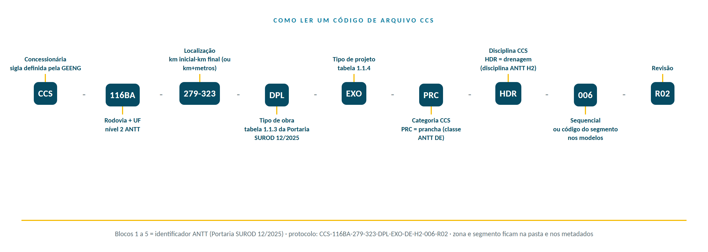
Regras: zona e segmento não entram no nome (ficam na pasta e nos metadados; modelos BIM usam o código do segmento no bloco 8); a classificação ABNT NBR 15965 fica em PropertySet e coluna, nunca no nome; o nome não tem espaços, acentos nem pontos além da extensão; a revisão só avança na emissão (R00, R01...), a versão é controlada pela plataforma; a Portaria SUINF 28/2019 está revogada e não é referência de codificação. A sigla CCS aguarda confirmação da GEENG (art. 8º, parágrafo único).
O bloco 3 usa o km do PER vigente (Vol. II ajustado pós-leilão), o mesmo do código ANTT. O km do SNV-DNIT mais atualizado (202607A) vai nos metadados do contêiner (Seção 9.7), porque o PER será revisado para compatibilizar os marcos e a diferença entre os dois referenciais chega a cerca de 750 m na BR-116/BA.
Serviços que não são projeto, como inspeção, monitoração e cadastro de ativo existente, não têm tipo de projeto próprio na tabela 1.1.4. Para eles vale a convenção abaixo, confirmada pela Gestão da Informação em 04/10/2026 e registrada no gerador de código (Anexo 1.3).
| Produto | Bloco 4 | Bloco 5 | Exemplo (Ponte do Rio Pitombeira, BR-116/PE) |
|---|---|---|---|
| Relatório de inspeção ou de cadastro de ativo existente | MON | OUT | CCS-116PE-029+113-MON-OUT-REL-STR-001-R00 |
| Boletim de monitoração (classe ANTT RM) | MON | OUT | CCS-116PE-029+113-MON-OUT-REL-STR-003-R00 |
| Diretriz básica de recuperação de OAE | OAE | OUT | CCS-116PE-029+113-OAE-OUT-PRC-STR-001-R00 |
| Projeto de recuperação ou reforço (executivo) | OAE | EXO ou EXE | conforme a regra geral desta seção |
A tabela abaixo exemplifica a classificação NBR 15965 e a entidade IFC 4.3 de elementos típicos das disciplinas de uma obra rodoviária; o código vai no PropertySet CRS-A-Inf_Ger_Proj. A planilha completa está no CDE.
| Disciplina | Elemento | Código NBR 15965 | Entidade IFC 4.3 |
|---|---|---|---|
| Geometria | Alinhamento horizontal | 3E-... | IfcAlignment |
| Pavimento | Camada de revestimento | 3E-21 30 00 | IfcCourse / IfcPavement |
| Terraplenagem | Aterro | 3E-... | IfcEarthworksFill |
| Drenagem | Boca-de-lobo | 3E-... | IfcDistributionChamberElement |
| Drenagem | Tubo corrugado | 3E-... | IfcPipeSegment |
| OAE | Tabuleiro de ponte | 3E-... | IfcSlab (IfcBridge) |
| Sinalização | Placa de regulamentação | 2Q-... | IfcSign |
| Iluminação | Luminária LED | 2Q-... | IfcLightFixture |
| ITS / SCV | Painel de mensagem variável | 2Q-... | IfcSign / IfcCommunicationsAppliance |
| Telecom | Fibra óptica (duto) | 3E-... | IfcCableCarrierSegment |
| Utilidades | Gasoduto enterrado | 3E-... | IfcPipeSegment (IfcDistributionSystem: GAS) |
A SE-003 (03/10/2026, revisada em 05/10/2026) divide a concessão em sete zonas na BR-116, de Salgueiro a Feira de Santana, duas zonas de contorno (Z08 Contorno de Serrinha, via nova em pista dupla; Z09 BR-324/BA, anel de Feira de Santana, contorno leste, com obras do DNIT em curso), mais a zona Z00 Geral para projetos de toda a extensão (cadastro inicial e SIG, sinalização, pavimento, ITS e telecom, sistema Free Flow, CCO, estoque de melhorias e obras emergenciais). Cada zona é o pacote de projetos de um squad: escritório multidisciplinar de infraestrutura, contrato de sondagens, especialista em OAE e especialista em geotecnia e contenções. Dentro da zona, as obras se agrupam em segmentos (obras próximas, executadas em conjunto, com anos de entrega iguais ou subsequentes; o ano-âncora é o da obra mais cedo) e em tramos (uma obra ou edificação, código TTTNN com o tipo de obra da Portaria SUROD 12/2025). O ano de projeto, como metadado, é o ano de obra do PER menos dois.
| Zona | Trecho (km PER pós-leilão) | km SNV (DNIT 202607A) | Nome | Anos de obra | Tramos | Edificações |
|---|---|---|---|---|---|---|
| Z01 | BR-116/PE 25,700 a 91,600 | 25,594 a 91,500 | Salgueiro-Ibó (PE) | 2º, 3º | 34 | BSO 01; pórtico P5; UOP PRF km 82 |
| Z02 | BR-116/BA 0,000 a 87,100 | 0,351 a 86,446 | Ibó-Chorrochó-Macururé | 2º, 8º | 20 | BSO 02; BSO 03 |
| Z03 | BR-116/BA 87,100 a 205,200 | 86,446 a 204,456 | Macururé-Canudos-Euclides da Cunha | 2º, 6º, 7º, 8º | 26 | pórtico P4; BSO 04; BSO 05 |
| Z04 | BR-116/BA 205,200 a 273,790 | 204,456 a 273,066 | Euclides da Cunha-Quijingue-Tucano | 2º, 6º | 46 | pórtico P3; BSO 06; PPD (provisório) |
| Z05 | BR-116/BA 273,790 a 323,340 | 273,066 a 322,491 | Tucano-Araci | 2º, 5º, 6º | 53 | BSO 07 |
| Z06 | BR-116/BA 323,340 a 371,380 | 322,491 a 370,976 | Teofilândia-Serrinha | 2º, 4º, 5º | 35 | pórtico P2; BSO 08; UOP PRF km 370,3 |
| Z07 | BR-116/BA 371,380 a 428,900 | 370,976 a 429,358 | Serrinha-Feira de Santana | 2º, 3º | 13 | PPVf km 390; BSO 09; BSO 10; pórtico P1 |
| Z08 | Contorno de Serrinha 0,000 a 7,110 | - | Contorno de Serrinha | 4º | 7 | - |
| Z09 | BR-324/BA 512,500 a 519,700 | 520,643 a 512,744 | BR-324 anel de Feira de Santana (contorno leste, obras do DNIT) | 3º | 1 | - |
| Z00 | todas | - | Geral | 1º a 8º | 2 | CCO; escritório ANTT |
Limites de Z02, Z03 e Z04 por entroncamento SNV (BA-311 e BR-423); lotes de acessos de 10 km entram na zona do ponto médio; itens do Contorno de Serrinha (PER Tab. 11, 17, 18 e 29) ficam em Z08-S01 e os da BR-324 em Z09-S01. A lista mestre (237 tramos) e o KMZ oficial das zonas são produtos da SE-003; a tabela de segmentos está no Anexo 1.1.
Dupla referência de quilometragem: todo documento do acervo cita o km do PER (Vol. II ajustado pós-leilão, Tabela 1) e o km SNV do DNIT na versão mais recente (202607A). O PER será atualizado para compatibilizar os marcos, e a dupla citação evita retrabalho nessa transição. A conversão vem da tabela de marcos de 100 m projetados no eixo SNV (07 GIS/03_Analise_Dados/MarcosKM_vs_SNV, R02); o desvio chega a 0,75 km na BR-116/BA e a BR-324 tem numeração invertida em relação ao DNIT.
Trechos homogêneos: cada zona e cada segmento do acervo são correlacionados aos trechos homogêneos (TH) do PER Vol. II pós-leilão (Tabela 43, com código SNV, extensão, pista e pavimento), e essa correlação acompanha a lista mestre (aba Zonas_TH e coluna TH por tramo), o KMZ e o mapa interativo das zonas, as páginas dos sites de zona e o campo Segmento homogêneo do CDE. Z01 cobre TH_01 a TH_06; Z02, TH_07 a TH_11; Z03, TH_11 a TH_13; Z04, TH_13 a TH_18; Z05, TH_18 a TH_21; Z06, TH_21 a TH_25; Z07, TH_25 a TH_36; Z08, o TH Contorno; Z09 (BR-324), TH_40 a TH_44. A tabela completa está no Anexo 1.1.
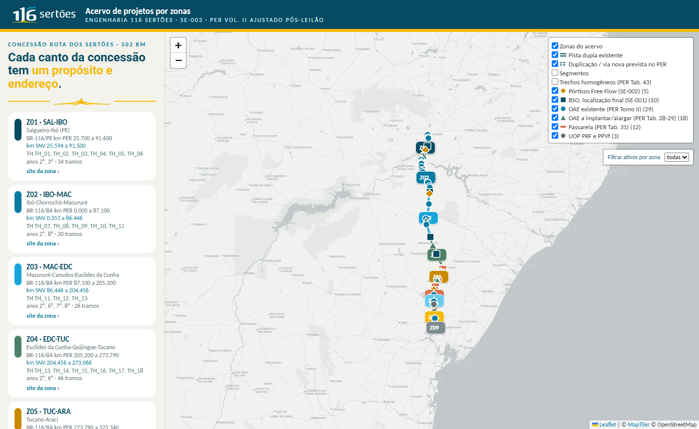
Cada zona é um site SharePoint próprio (Eng116-Zxx), ligado ao site Engenharia 116 Sertões pela navegação, com as mesmas bibliotecas: 00 GESTAO (atas, apresentações, cronograma, PEB, contratos do squad), 01 DADOS DE ENTRADA (topografia, sondagens, cadastro, SIG, extratos do PER, interferências), 02 CDE-INFR, 03 CDE-EDIF, 04 PROTOCOLOS ANTT, 05 MIDIA e 06 ORCAMENTO 5D. Dentro do CDE a profundidade é de cinco níveis, para manter o caminho sincronizado no Windows abaixo de 260 caracteres; por isso os nomes de pasta usam abreviaturas de três letras dos municípios (SAL Salgueiro, CAB Cabrobó, IBO Ibó, ABA Abaré, CHO Chorrochó, MAC Macururé, CAN Canudos, EDC Euclides da Cunha, QUI Quijingue, TUC Tucano, ARA Araci, TEO Teofilândia, SER Serrinha, SBA Santa Bárbara, FSA Feira de Santana; CTS Contorno de Serrinha; TU travessia urbana; DPL duplicação) e os sites das zonas têm título curto (Z07 SER-FSA):
| Nível | Pasta | Exemplo |
|---|---|---|
| 1 | Ano-âncora + segmento + abreviatura dos municípios (3 letras) | A05-S02 TUC-ARA-DPL |
| 2 | Tramo (tipo de obra POP 12 + sequencial) | DPL01 |
| 3 | Tipo de projeto (nível 5 ANTT) | EXO (também EVT, FUN, ANT, EXE, ASB) |
| 4 | Disciplina CCS (o contrato do squad responde por disciplina) | HDR |
| 5 | Categoria (último nível; _OBSOLETO aqui) | PRC, MEM, MOD, PLQ |
Os estados da informação (Seção 10.1.1) são coluna e fluxo de aprovação, não pasta. Metadados obrigatórios de cada contêiner: zona, segmento, tramo, rodovia/UF, km inicial e final no PER vigente e no SNV-DNIT 202607A, município, trecho SNV, segmento homogêneo (Tabela 43 do PER), ano de obra, ano de projeto, tipo de obra, tipo de projeto, classe e disciplina ANTT, categoria e disciplina CCS, contrato originador, estado, revisão, código ANTT, classificação NBR 15965, protocolo SEI e fonte no PER. Com eles, as visões por ano, por disciplina, por estado e por pendência de protocolo saem de filtros, sem duplicar pastas. Detalhes e correspondência com a ISO 19650-2: Anexo 1.1.
Nomeado cada elemento, resta reger sua circulação: é o EIR, na Seção 10.
10 / Requisito de troca de informação (EIR)
Trocar informação é um processo com estados, gates e prazos. O CDE é onde isso acontece.
O Requisito de Troca de Informação (EIR) define como a informação é gerida e trocada no projeto: formatos de arquivo, responsabilidades e documentos. Este capítulo abrange a comunicação com o órgão regulador, a segurança da informação, o uso do Ambiente Comum de Dados (CDE), os padrões de apresentação, o controle de qualidade, além das especificações de software e hardware necessárias.
O Ambiente Comum de Dados (CDE) é a fonte única de verdade do projeto, onde são centralizados os modelos, projetos de autoria, bibliotecas e modelos federados. A Concessionária adota como CDE a plataforma
O CDE é o instrumento central do BIM Nível 2: no regime colaborativo da ISO 19650-1, a colaboração estruturada entre disciplinas e a rastreabilidade dos estados da informação dependem de um ambiente único e controlado. A Concessionária mantém um CDE dedicado a modelos e informação geométrica, complementado por plataforma corporativa de gestão documental para memoriais, relatórios, planilhas de quantitativos e correspondência formal. A escolha das ferramentas é objeto de avaliação técnica e econômica própria, sendo este Caderno neutro quanto a fornecedores.
No regime de BIM Nível 2, o contêiner de informação é tratado como evento, e não como objeto: cada submissão, revisão ou mudança de estado dispara um fluxo de trabalho definido, com papéis, prazos e decisões registradas. A anatomia desses fluxos, o processo CRA de verificação, revisão e aprovação e os padrões adotados pela Concessão estão detalhados no Anexo 2.5.
Cada projeto contará com estruturas organizacionais próprias, separando infraestrutura e edificações, com permissões de acesso configuradas por papel (gestor da informação, time de disciplina, leitor). O acesso é aberto por padrão: toda pasta de projeto é legível pelos papéis inscritos no contrato, e a restrição decorre apenas da classificação de segurança da informação e do estado Em Andamento, reservado à equipe autora. Fechar sem classificação que justifique é exceção a justificar, não o normal do fluxo.
A norma ISO 19650 define os estados da informação possíveis para todas as informações gerenciadas no CDE. Toda informação deve estar em um, e apenas um, desses estados:
| Estado | Responsável | Condição de uso |
|---|---|---|
| Em andamento (WIP) | Equipe autora | Acesso restrito à equipe autora; não deve ser usado em coordenação. |
| Em análise | Contratada → Concessionária | Aguardando avaliação; não autorizado para uso por terceiros. |
| Compartilhado (Shared) | Equipe autora / Aprovado | Disponível às equipes de projeto; pode ser usado em coordenação. |
| Publicado (Published) | Concessionária | Aprovado após controle de qualidade; pronto para detalhamento e uso em obra. |
| Arquivado (Archived) | CDE | Substituído por versão mais recente; somente leitura, preservado para histórico. |
A Figura 4 resume a máquina de estados e os gates do processo CRA, incluindo a regra de ouro do item seguinte.
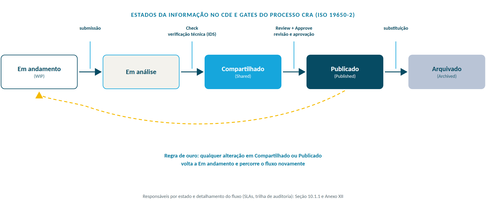
Regra de ouro: qualquer alteração em arquivo Compartilhado ou Publicado deve reverter o estado para “Em andamento”, percorrendo novamente o fluxo de análise, com a mudança comunicada no CDE.
A comunicação operacional entre as partes deve ser conduzida por meio de grupo corporativo de mensageria, complementada por e-mail para comunicações formais. Todo registro de ocorrências técnicas deve ser documentado no CDE (comentários georreferenciados / BCF). Reuniões extras podem ser convocadas pela Concessionária para alinhar premissas relevantes. A cadência mínima é a seguinte:
| Reunião | Propósito | Cadência | Participantes |
|---|---|---|---|
| Reunião de início (kick-off) | Alinhar escopo, requisitos e PEB contratual | Uma por contrato | Contratante, contratada, gestores |
| Acompanhamento individual | Dúvidas de requisito, remoção de bloqueios, premissas | Quinzenal | Gestor da informação, coordenador da contratada |
| Coordenação multidisciplinar | Federação, interferências e apontamentos BCF | Por ciclo de federação | Coordenadores por disciplina |
| Análise de submissão (CRA) | Verificação, revisão e aprovação de contêineres | Por submissão | Papéis do fluxo (Anexo 2.5) |
| Comitê de Gestão da Informação | KPIs, exceções, evolução do roadmap | Mensal | Comitê (Seção 16.1) |
A comunicação com o Poder Concedente (ANTT) é feita pela Concessionária por meio do setor Regulatório. Os arquivos desenvolvidos pela Contratada devem ser apresentados ao setor de Projetos da Concessionária, que realizará a análise crítica. Caso haja objeção, os apontamentos são registrados no CDE.
Em caso de não objeção, o setor de Projetos, em alinhamento com o setor Regulatório, encaminha as informações conforme diretrizes da ANTT para protocolo de projetos (Sistema Eletrônico de Informações, SEI, ou arquivo digital). A ANTT analisa a conformidade dos projetos com os normativos vigentes, emitindo parecer de aprovado, aprovado com ressalvas ou não aprovado.
Observação: BIM Mandate ANTT: a Decisão SUROD nº 737/2025 estabelece o BIM Mandate para concessões rodoviárias federais, com prazos para PD-BIM (90 dias), PEB (6 meses), requisitos ISO 19650 (1 ano) e CDE (18 meses). Este Caderno está alinhado a esses requisitos e deve evoluir conforme as diretrizes operacionais do BIM Mandate forem detalhadas pela ANTT.
Estações de trabalho do projeto são isoladas de usos pessoais. A segurança da informação segue a abordagem orientada à segurança da ISO 19650-5 e a política corporativa da Contratante: controle de acesso por papel no CDE, criptografia em repouso e em trânsito, classificação da informação (público, interno, confidencial), registro de acessos e plano de resposta a incidentes.
No desenvolvimento do projeto, a Contratada deve utilizar os templates e bibliotecas fornecidos pela Contratante no CDE. Recursos desenvolvidos pela Contratada, uma vez integrados ao projeto, passam a ser propriedade intelectual da Contratante. É obrigatório que, na fase de planejamento inicial, a Contratada detalhe no PEB pré-contratual quais templates e bibliotecas utiliza, assegurando a continuidade do projeto nas etapas futuras do ciclo de vida.
Sistema geodésico: SIRGAS 2000 (EPSG:4674), referencial oficial do Sistema Geodésico Brasileiro (Decreto 5.334/2005 e IBGE), com projeção UTM no fuso correspondente à área do projeto. Para a Concessão Rota dos Sertões, aplicam-se os fusos 23L, 24L e 25L conforme o trecho.
A apresentação e a codificação de documentos seguem a Portaria SUROD 12/2025 (redação consolidada com as Portarias SUROD 15/2025 e 122/2025), que revogou a Portaria SUINF 28/2019: volumes por tipo de estudo ou projeto (art. 7º), documentos obrigatórios de cada protocolo (art. 7º, § 2º: declaração de veracidade, guia de remessa, caderno de respostas, check-list de atendimento ao PER com página do volume, ART), codificação (Anexo, item 1.1), extensões aceitas (item 1.1.8) e planejamento anual de envio de projetos (art. 37). O código de arquivo CCS (Seção 9.4) complementa o padrão ANTT; o detalhe está nos Anexos 1.3 (gerador de código) e 1.4 (volumes e protocolo).
Para cumprir os requisitos de controle de qualidade, alinhados às diretrizes da ISO 9001 e da ISO 19650-2, a Contratada deve implementar, no mínimo, os seguintes procedimentos:
| Procedimento | Objetivo |
|---|---|
| Validação em pares (peer review) | Avaliação colaborativa do trabalho pelos especialistas. |
| Inspeção visual | Assegurar ausência de componentes não planejados e fidelidade à intenção do projeto. |
| Clash detection | Identificação e resolução de conflitos entre componentes do projeto. |
| Verificação de padrões | Adesão aos padrões do Caderno (fontes, estilos de linha, camadas, NBR 15965). |
| Verificação de integridade | Garantir ausência de elementos indefinidos, incorretos ou duplicados. |
| Validação IFC / IDS | Conformidade do modelo exportado com os requisitos de informação (openBIM). |
| Validação de quantitativos | Conferência dos quantitativos extraídos do modelo vs. planilha orçamentária. |
A Contratada deve detalhar no PEB pré-contratual como realiza o controle para cada item, incluindo metodologia, ferramentas, periodicidade e participantes.
Os Tipos de Informação (TDI) estruturam-se em PropertySets (tabela TDI no CDE); o Nível de Necessidade de Informação (LOIN) define, por elemento e fase, a informação necessária (ISO 19650-1). PropertySets essenciais adicionais são propostos pela contratada via PEB ou FR-BIM-06; grandezas espaciais seguem a NBR ISO 80000-3 (L, B, H).
IFC 4.3 (ISO 16739-1:2024): os projetistas devem adotar a classificação IFC 4.3 para infraestrutura, incluindo as entidades IfcRoad, IfcAlignment, IfcPavement, IfcBridge, IfcCourse, IfcEarthworksFill, IfcSign, IfcDistributionSystem, entre outras. A classificação, uma vez estabelecida, permanece inalterada ao longo do ciclo de vida dos objetos.
Modelo federado: o modelo federado, representando o projeto multidisciplinar, deve ser elaborado conforme as diretrizes deste Caderno, com aplicação de cores, camadas e materiais especificados na lista disponível no CDE. Caso o material necessário não esteja presente na lista, a Contratada deve submeter proposta, a ser definida em colaboração com a Concessionária.
A Contratada deve especificar todos os softwares utilizados, organizados por disciplina, incluindo plugins e desenvolvimentos internos. Os softwares escolhidos devem ser capazes de atender aos requisitos dos entregáveis e permitir a extração de arquivos no formato IFC 4.3, assegurando a interoperabilidade e a compatibilidade com os padrões openBIM.
A Contratada deve declarar que dispõe de hardware que atende às especificações técnicas recomendadas pelo fabricante dos softwares selecionados para o projeto.
A Contratada deve fornecer, no mínimo, os entregáveis conforme os tipos de arquivo elencados na tabela de entregáveis disponível no CDE, incluindo bibliotecas e templates quando aplicável. Os prazos de entrega estão consolidados na Matriz PER × BIM (Seção 16).
| Tipo de entregável | Formatos |
|---|---|
| Modelos BIM (por disciplina) | Formato nativo + IFC 4.3 + modelo federado IFC |
| Documentos textuais | Formato nativo editável + PDF |
| Planilhas de quantitativos | Formato nativo editável + PDF |
| Desenhos técnicos | Formato nativo CAD + PDF + DXF |
| Alinhamentos | Nativo + XML (LandXML) + IFC 4.3 |
| Relatórios de clash detection | BCF + PDF |
| Modelo As Built | Formato nativo + IFC 4.3 + modelo federado IFC |
Trocar com regras pede prova objetiva de atendimento: essa prova é o IDS, Seção 11.
11 / IDS, análise automatizada de modelos BIM
O IDS transforma exigência em verificação automática: o modelo passa ou não passa.
BIM como processo, não como produto. A Concessão Rota dos Sertões enxerga o BIM como um processo contínuo de projeto e gestão da informação, e não como um produto final entregue em arquivo. O modelo BIM amadurece progressivamente ao longo do ciclo de vida do ativo, sustentando decisões em cada etapa, desde a concepção até a reabilitação. Essa visão processual orienta todos os pré-requisitos de informação definidos neste Caderno.
A Information Delivery Specification (IDS) é um padrão aberto da buildingSMART International, aprovado como padrão final em sua versão 1.0 (junho de 2024), que define os requisitos de entrega de informação de modelos BIM em formato interpretável por máquina, serializado em XML. O IDS operacionaliza o conceito de Nível de Necessidade de Informação (LOIN) da ISO 19650-1, traduzindo os Requisitos de Troca de Informação (EIR) em regras verificáveis automaticamente contra arquivos IFC, inclusive o IFC 4.3 para infraestrutura rodoviária.
Em síntese, o IDS transforma o que se espera de um modelo em testes objetivos. Em vez de checklist manual e inspeção visual, a Contratada entrega o modelo IFC e a Contratante aplica o arquivo IDS correspondente, obtendo um relatório automático de conformidade (passou ou não passou, por entidade e por requisito).
IDS é ao EIR o que o IFC é ao modelo: o formato aberto que torna a exigência técnica computável, auditável e independente de software proprietário.
Um arquivo IDS é composto por especificações (specs). Cada especificação tem um bloco de aplicabilidade (a quais entidades IFC se aplica) e um bloco de requisitos (o que deve ser verdadeiro). As regras combinam facets (facetas) com lógica all ou any:
| Faceta (facet) | O que verifica | Exemplo de uso CRS |
|---|---|---|
| Entity | Tipo da entidade IFC (IfcRoad, IfcCourse, IfcSign, etc.) | Aplicar regra a todas as camadas de pavimento |
| Classification | Código de classificação referenciado (NBR 15965, bSDD) | Exigir que cada OAE tenha código 3E NBR 15965 |
| Property | Valor de um PropertySet (obrigatório, faixa, lista) | Exigir CRS-D-Esp_Tec.Material preenchido em camadas de pavimento |
| Material | Material associado (IfcMaterial) | Verificar associação de CBUQ na camada de revestimento |
| Attribute | Atributo nativo da entidade IFC | Verificar IfcAlignment.Name conforme padrão de estaqueamento |
| PartOf / Applicability | Relacionamento e pertinência | Garantir que todo IfcSign esteja associado a um IfcRoad |
A cardinalidade (all ou any) permite expressar tanto regras restritivas (todos os elementos devem atender) quanto regras alternativas (ao menos uma condição). Cada requisito pode ter instruções de severidade (mandatory ou recommended).
A estratégia IDS da Concessionária conecta três camadas normativas que incidem sobre os modelos BIM da concessão. O IDS é o ponto de convergência que torna essas três camadas verificáveis em uma única operação automatizada.
| Camada normativa | Exigência verificável via IDS | Exemplo de regra IDS |
|---|---|---|
| Pré-requisitos CRS (modelagem, 4D, 5D) | Presença de PropertySets CRS-A a CRS-E (Anexo 1.2); código 5D preenchido; associação a etapas construtivas para 4D; composição SINAPI/SICRO para 5D. | Toda IfcCourse deve ter CRS-E-EAP.Codigo5D e CRS-E-EAP.ComposicaoSINAPI. |
| Requisitos da ANTT (Resolução 6.000/2022; Decisão SUROD 737/2025; Portaria SUROD 12/2025) | Conformidade com codificação de alinhamentos, estaqueamento, SIRGAS 2000, volumes e As Built conforme a Portaria SUROD 12/2025. | Todo IfcAlignment deve seguir o padrão de 10 blocos de codificação e ter IfcMapConversion para SIRGAS 2000. |
| Normas técnicas de classificação (ABNT NBR 15965 e NBR ISO 12006-2) | Presença de código de classificação NBR 15965 (tabelas 2C, 3E, 3R, 4U) em todos os elementos quantificáveis, com referência ao bSDD quando aplicável. | Todo IfcPipeSegment deve ter ClassificationReference à tabela 3E da NBR 15965. |
Os pré-requisitos não são estáticos: amadurecem com o ativo, e o IDS evolui junto. O encadeamento por etapa (concepção, detalhamento, análise, orçamento, planejamento 4D, contratação, supervisão, operação e reabilitação) é o próprio arco deste Caderno, das Seções 12 a 13; a matriz de requisitos por etapa está no CDE.
O IDS só produz valor sobre quatro pilares: políticas (este Caderno, Comitê, EIR), processos (FR-BIM-07 e FR-BIM-03, fluxo de SMP), pessoas (papéis e trilha da Seção 14.3) e tecnologias (validador e verificador neutros quanto a fornecedor, no CDE).
A adoção do IDS é progressiva e alinhada ao Roadmap de Maturidade BIM CRS (Seção 2). Em vez de implantar todas as validações de uma vez, a Concessionária estabelece etapas que evoluem do simples ao complexo, permitindo aprendizado interno, capacitação da cadeia de fornecedores e calibração das regras. A Figura 1 (Seção 2) consolida as Fases IDS e os Estágios CRS no mesmo horizonte temporal.
| Fase IDS | Horizonte | Escopo de validação automatizada | Gatilho de pagamento |
|---|---|---|---|
| Fase 0, Piloto interno | Ano 1 | IDS de validação básica em um projeto piloto: presença de alinhamento, georreferenciamento SIRGAS 2000 e entidades IFC 4.3 mínimas. | Sem vínculo contratual; aprendizado interno. |
| Fase 1, Validação técnica obrigatória | Ano 1 a 2 | IDS aplicado a todas as entregas de projeto executivo: PropertySets CRS-A a CRS-E obrigatórios, classificação NBR 15965, formatos IFC 4.3 e XML. | Aprovação técnica do modelo condiciona aceite da entrega. |
| Fase 2, Aprovação interna integrada | Ano 2 a 3 | IDS expandido para 4D (etapas construtivas e vínculo ao cronograma) e 5D (composições SINAPI/SICRO e quantitativos). | Relatório IDS verde é pré-requisito para liberação de pagamento de projeto. |
| Fase 3, Pagamento baseado em modelo | Ano 3 a 4 | Medição de obras por extração do modelo (5D) verificada por IDS; As Built progressivo validado etapa a etapa. | Pagamento de medição de obras lastreado em quantitativos validados por IDS. |
| Fase 4, Ciclo de vida integrado | Ano 4 em diante | IDS conectado ao AIM e ao SIGACO, com handover automatizado e validação contínua na operação. | Pagamento de manutenção vinculado à condição do ativo no SIGACO. |
A passagem de uma fase para a seguinte não é automática: depende de critérios de prontidão que avaliam a maturidade da Concessionária e da cadeia para a tarefa específica da fase seguinte, e não uma maturidade genérica. A avaliação é formalizada pelo Comitê de Gestão da Informação, com evidências registradas no CDE.
| Transição | Critérios de prontidão (maturidade para a tarefa) | Evidência exigida |
|---|---|---|
| Fase 0 para Fase 1 | Ferramenta validadora homologada no padrão buildingSMART; Validador IDS designado e capacitado; biblioteca IDS da CRS publicada no CDE. | Ata de homologação e trilha de capacitação |
| Fase 1 para Fase 2 | Aprovação IDS em ao menos 90% das entregas por 3 meses consecutivos; pré-validação na origem praticada por todas as contratadas ativas; ao menos 1 BIM Coordinator capacitado por contratada. | Relatórios IDS no CDE; lista de capacitados |
| Fase 2 para Fase 3 | Relatório IDS conforme em 100% das entregas de projeto executivo; medição 5D piloto validada contra planilha contratual; condutores dos KPIs publicados no SIG. | RETOFF do período; relatório do piloto 5D |
| Fase 3 para Fase 4 | AIM alimentando os 10 subsistemas do SIGACO; telemetria IoT em produção em ao menos uma frente; nenhum checklist manual equivalente remanescente no fluxo. | Inventário SIGACO; registro de integração |
A aprovação interna de modelos pela Concessionária segue fluxo padronizado, com validação automatizada IDS como etapa central. O fluxo substitui gradualmente a inspeção manual e cria rastreabilidade objetiva entre a entrega e a decisão de aceite.
A partir da Fase 2 do roadmap, o relatório IDS passa a condicionar a liberação de pagamento a fornecedores de estudos, projetos e levantamentos de campo. O modelo BIM deixa de ser mero entregável técnico e passa a ter valor contratual direto, como instrumento de medição.
| Tipo de contratação | Gatilho de pagamento tradicional | Gatilho IDS (a partir da Fase 2) |
|---|---|---|
| Estudos (EVTEA, funcional) | Entrega de memoriais e plantas em PDF + aceite por inspeção visual. | Modelo IFC 4.3 validado por IDS (CRS-A, CRS-B, CRS-C obrigatórios). |
| Projetos (funcional, executivo) | Protocolo de volumes e aceite da ANTT. | Modelo validado por IDS com PropertySets CRS-A a CRS-E completos, classificação NBR 15965 e código 5D. |
| Levantamentos de campo (topografia, SUE, elétrica) | Relatório técnico + plantas + nuvem de pontos. | Modelo de condições existentes validado por IDS específico (CRS-C de georreferenciamento e CRS-PST-Utilidade para SUE). |
| Medição de obras (Fase 3 em diante) | Planilhas de quantitativos manuais e diário de obras. | Quantitativos extraídos do modelo e validados por IDS 5D; etapas concluídas verificadas no 4D. |
Como referência de mercado para contratações de projeto, admite-se a decomposição da medição por entregável, com pesos por item de medição. A tabela a seguir apresenta um modelo de referência; os percentuais efetivos são definidos em cada contratação, documentados no PEB e no MIDP do contrato (Anexo 3.4), e cada parcela somente é liberada com o contêiner no estado de informação exigido.
| Item de medição | Peso de referência | Condição de liberação |
|---|---|---|
| Análises preliminares e estudos de alternativas | 10% | Estudos aprovados no CDE |
| Entrega dos modelos BIM em formato nativo e IFC | 20% | Modelos validados por IDS (Check) |
| Aprovação na coordenação por disciplina | 10% | Verificação por disciplina sem pendências |
| Aprovação na coordenação multidisciplinar | 10% | Apontamentos BCF encerrados |
| Aprovação na extração de quantidades | 20% | Planilha de quantidades validada contra o modelo |
| Geração de entregáveis 2D a partir dos modelos | 30% | Pranchas emitidas e revisadas a partir do modelo |
Para projetos de grande vulto com entregas parciais, acordam-se proporções por pacote, com o estado de informação de cada pacote definido nos documentos contratuais, na forma do Anexo 2.5.
Princípio: sem IDS verde, não há pagamento. O relatório IDS conforme é pré-requisito formal e auditable para a liberação de qualquer medição de projeto, estudo ou levantamento vinculado a modelo BIM, a partir do horizonte definido no roadmap.
A Concessionária define requisitos funcionais, não marcas. Este Caderno é neutro quanto a fornecedores: qualquer ferramenta que atenda aos requisitos e aos padrões abertos (IFC, BCF e IDS) é admissível. O ambiente de validação IDS é composto por:
Responsabilidades e capacitação por papel no fluxo IDS seguem a trilha da Seção 14.3; o registro de cada validação usa o FR-BIM-07.
Tudo o que foi exigido até aqui pressupõe conhecer o que já existe: é onde a Seção 12 começa.
12 / Modelagem das condições existentes
A rodovia já existe. Modelar o que está lá é o primeiro trabalho de qualquer projeto novo.
A Modelagem de Condições Existentes é a captura e representação digital do estado físico atual do ativo antes (ou independentemente de) uma intervenção de projeto. Em infraestrutura rodoviária, abrange o leito estrutural, pavimento, dispositivos de drenagem, obras de arte, sinalização, dispositivos de segurança, geomorfologia da faixa de domínio e utilidades existentes.
A ISO 19650 distingue os modelos conforme a fase do ativo:
Em uma concessão rodoviária que opera sobre rodovia existente, o AIM da rodovia já existe (ou deve existir) antes do PIM da intervenção. Ao final da obra, o PIM do alargamento alimenta e atualiza o AIM (handover). Essa inversão do fluxo clássico é a realidade operacional da concessão.
A Figura 5 contrasta o fluxo clássico de entrega de ativos novos com o ciclo contínuo da concessão sobre rodovia existente.
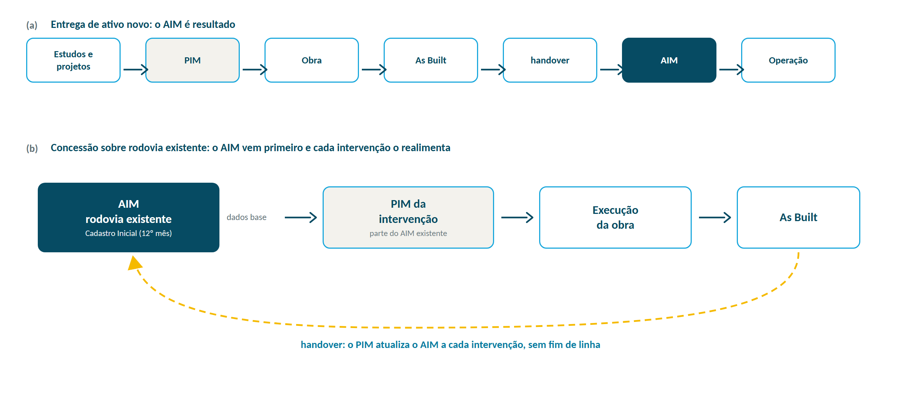
Diferença importante: o As Built representa o que foi efetivamente construído (referenciado a um contrato/projeto executivo), enquanto o modelo de condições existentes é mais amplo e inclui ativos não documentados originalmente.
A captura das condições existentes deve combinar, conforme aplicável:
| Método | Aplicação típica | Norma de referência |
|---|---|---|
| LiDAR aerotransportado | Faixa larga, MDT/MDS, faixa de domínio | NBR 13133; IBGE |
| MMS (Mobile Mapping System) | Inventário ao longo do eixo (preferencial) | NBR 13133 |
| TLS (escaneamento laser terrestre) | Singularidades: OAE, interseções, praças | GSA BIM Guide 03 |
| SLAM | Ambientes sem GNSS: túneis, passarelas cobertas | — |
| Fotogrametria por VANT/drone | Faixa de domínio, volumes, croqui | NBR 13133 |
| Apoio de campo | Poligonais e RNs amarrados à RBC/RGB | NBR 14166; IBGE |
Os levantamentos que baseiam a modelagem das condições existentes atendem, no mínimo, a:
As investigações geotécnicas integram o modelo das condições existentes do subsolo e atendem, no mínimo, a:
O LOIN para ativos existentes deve ser definido por elemento, derivado das AIR, considerando:
O Cadastro Inicial (PER Vol. I, §4.1, até o 12º mês) e o SIG com recobrimento aerofotogramétrico (§4.7, 12º mês) constituem a base primária da Modelagem de Condições Existentes; a contratada parte desses insumos, disponíveis no CDE, e os complementa quando necessário.
Nenhuma obra começa sem conhecer as utilidades enterradas: a investigação segue a prática SUE (ASCE/UESI/CI 38-22, complementada pela PAS 128:2022 e pela ABNT NBR 15935:2011) e classifica cada ativo do nível QL-D ao QL-A. Os níveis de qualidade, as utilidades típicas da faixa de domínio, o fluxo de trabalho e a representação em IFC 4.3 estão consolidados no Anexo 4.1, arquivo independente que acompanha este Caderno.
As estruturas elétricas e de telecomunicações que ocupam a faixa de domínio da concessão são, em sua maioria, bens reversíveis que compõem os subsistemas SGSEI (Sistemas Elétricos e Iluminação), SGOST (Sistemas de Telecomunicações) e SGTEC/SGITS (ITS) do SIGACO. Sua correta modelagem é essencial para a operação integrada e a evolução para Gêmeo Digital (Seção 13).
A Figura 6 consolida o inventário por família de ativo, a entidade IFC 4.3 de representação e o subsistema SIGACO de destino, com a telemetria realimentando o AIM na fase operacional.
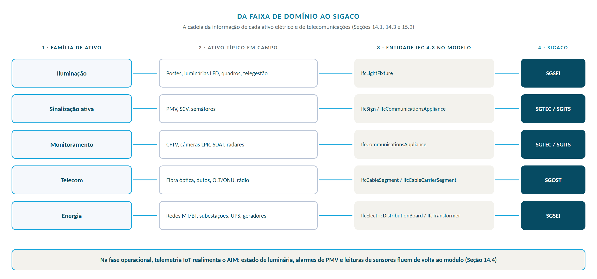
A concessionária rodoviária consome energia (praças, iluminação, ITS) e, em muitos casos, hospeda na faixa de domínio redes da concessionária de energia em regime de compartilhamento (Termo de Autorização de Passagem). Deve-se coordenar:
Do campo à operação, o destino final da informação é o SIGACO e o Gêmeo Digital: Seção 13.
13 / Gêmeo Digital e gestão de ativos (SIGACO)
O modelo entregue vira ativo gerido. O SIGACO é onde a informação segue viva depois da obra.
A evolução natural do BIM na fase operacional é o Gêmeo Digital (Digital Twin), representação digital de um ativo físico com conexões de dados que permitem a convergência entre os espaços físico e digital (ISO/IEC 30173:2023). Enquanto o AIM descreve o ativo, o Gêmeo Digital o representa em tempo real, alimentado por sensores IoT, telemetria e dados operacionais.
A arquitetura tem cinco camadas: o ativo físico; o AIM como representação digital estática; a conexão de dados (sensores, telemetria); o Gêmeo Digital, que sincroniza físico e digital; e a camada de análise, para predição e otimização.
O SIGACO (PER Vol. I, §4.8) é exigido pela ANTT com 10 subsistemas, inventariação, modelos de desempenho e certificação ISO 55001, em três fases: Plano de Gestão (9 meses), Inventário Inicial (12) e Implantação dos Subsistemas (24).
O SIGACO é o destino final da informação produzida pelo BIM. Cada subsistema corresponde a uma família de ativos cujos dados geométricos e atributivos são provenientes do AIM. A integração AIM ↔ SIGACO é feita via APIs, com o AIM como fonte de verdade geométrica/atributiva.
| Subsistema SIGACO | Família de ativos | Alimentação BIM |
|---|---|---|
| SGP (Pavimento) | Pavimento flexível/rígido | IfcPavement / IfcCourse |
| SGS (Sinalização) | Sinalização vertical e horizontal | IfcSign |
| SGOAE (Obras de Arte Especiais) | Pontes, viadutos | IfcBridge / IfcSlab |
| SGOAC (Obras de Arte Correntes) | Bueiros, sarjetas, canaletas | IfcPipeSegment / IfcKerb |
| SGTEC (Tecnologia/ITS) | PMV, SCV, CFTV, SDAT | IfcSign / IfcCommunicationsAppliance |
| SGF (Faixa de Domínio) | Faixa de domínio, dispositivos | IfcGeographicElement |
| SGSEI (Sistemas Elétricos e Iluminação) | Iluminação, energia, geradores | IfcLightFixture / IfcTransformer |
| SGOST (Telecomunicações) | Fibra, rádio, armários | IfcCableSegment / IfcCommunicationsAppliance |
| SGITS (ITS) | Integração ITS, IoT | Séries temporais + IFC |
| SGE (Exploração) | Operação, praças, atendimento | IfcSpatialZone |
A estratégia observa os princípios Gemini (CDBB/DFTG): propósito de bem público, confiança por segurança e qualidade dos dados, e função por federação e curadoria.
Os marcos (Inventário 12 meses, subsistemas 24, ISO 55001, gêmeo operacional e federado) acompanham os Estágios CRS da Seção 2 e os prazos da Matriz (Seção 16).
14 / Governança da informação e KPIs
Governança é gente, reunião e indicador: quem decide, quando decide e como se mede.
A governança da informação BIM é o conjunto de políticas, papéis, processos e ferramentas que asseguram que a informação seja confiável, segura, acessível e útil ao longo do ciclo de vida. Ela sustenta o cumprimento deste Caderno e a evolução da maturidade da concessionária.
| Instância | Composição | Responsabilidade |
|---|---|---|
| Comitê de Gestão da Informação | Diretoria de Engenharia, Gestão de Ativos, TI, Regulatório | Decisões estratégicas; prioridades; investimentos em BIM. |
| Gestor da Informação (Information Manager) | Profissional designado | Manter o CDE, o EIR e os processos de gestão (ISO 19650). |
| Núcleo BIM | Coordenadores e analistas BIM por área | Suporte operacional, capacitação, bibliotecas, templates. |
| Gestor de Ativos (Asset Information Manager) | Profissional designado | Manter o AIM, as AIR e a integração com o SIGACO. |
Cada indicador de resultado é acompanhado por um indicador condutor, que o antecede e permite agir antes que o desvio apareça. Os KPIs são monitorados periodicamente e reportados ao Comitê de Gestão da Informação; as metas são revisadas anualmente conforme a evolução da maturidade (Seção 2). A Figura 7 resume os seis pares principais.
| KPI (resultado) | Descrição | Meta de referência (R00) | Indicador condutor |
|---|---|---|---|
| Conformidade IFC | % de modelos entregues em IFC 4.3 sem erros de validação | ≥ 95% | % de modelos pré-validados por IDS na origem |
| Conformidade NBR 15965 | % de elementos com código de classificação válido | ≥ 95% | % de elementos com código preenchido na autoria |
| Conformidade PEB | % de projetos com PEB aprovado antes do início da modelagem | 100% | Tempo médio de análise do PEB (meta: 15 dias úteis) |
| Conflitos resolvidos (clash) | Nº de conflitos resolvidos antes da obra / total detectado | ≥ 98% | Ciclos de federação por disciplina, por mês |
| Redução de retrabalho | Variação % de horas de retrabalho vs. baseline | ≤ −15% a.a. | Horas de rework por contêiner (par do KPI Rework no CRA) |
| Adoção do CDE | % de projetos usando o CDE como fonte única | 100% | % de trâmites técnicos fora do CDE (meta: zero) |
| Tempo de aprovação (SMP) | Tempo médio de resposta a Solicitação de Mudança | ≤ 10 dias úteis | Nº de SMP por projeto (estabilidade de escopo) |
| Acurácia de quantitativos | Desvio entre quantitativo do modelo e executado | ≤ 5% | % de itens com origem declarada no modelo (básica/derivada/externa) |
| Cobertura do AIM | % de ativos reversíveis inventariados no AIM/SIGACO | 100% até 24º mês | km de corredor modelados por mês (scan-to-BIM) |
| Capacitação | Horas de treinamento BIM por colaborador / ano | ≥ 40 h | % da equipe com trilha de capacitação em dia, por trimestre |
| Desempenho do fluxo documental | % de etapas do CRA concluídas dentro do SLA (Anexo 2.5) | ≥ 90% | Idade da fila de verificação por etapa do fluxo |
| Rework no CRA | Nº médio de ciclos de retrabalho por contêiner publicado | ≤ 1,5 | % de submissões com checklist completo (FR-BIM-03) |
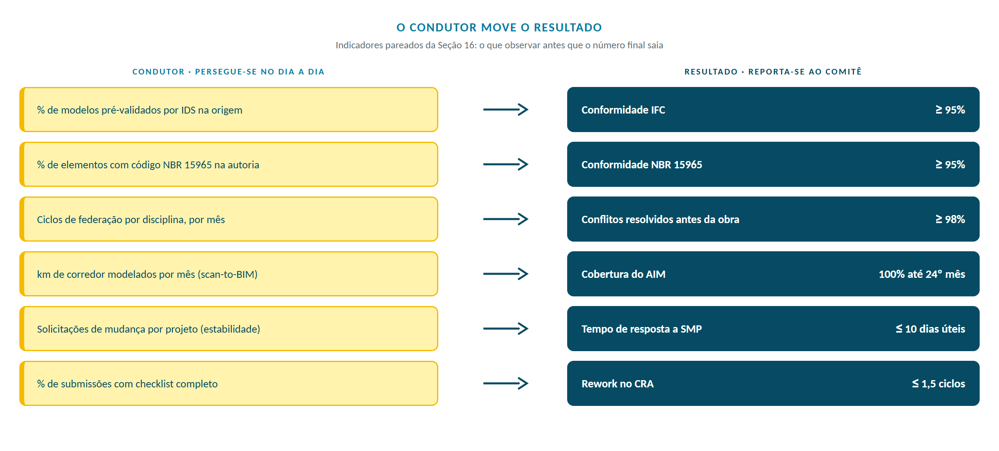
Cada condutor tem responsável por papel e ação definida para o desvio (coluna da tabela acima). A cobrança começa pelo condutor: fora da meta, o responsável responde pelo plano de correção antes de o resultado ser aferido. A publicação segue mecanismo único: painel de indicadores no SIG, atualizado até o 5º dia útil do mês seguinte pelo Gestor da Informação, com valor do mês, meta vigente, tendência dos três meses anteriores e ação de correção nomeada para todo condutor fora da meta. O painel é a fonte única de leitura para o Comitê de Gestão da Informação e para as partes contratadas.
Cada papel da estrutura de gestão da informação possui trilha mínima, mantida no Anexo 3.3 e no CDE. O percentual da trilha concluído por participante é o condutor trimestral do KPI de capacitação (Seção 14.2); a alocação da trilha integra o PEB contratual de cada contrato.
| Papel | Trilha mínima | Carga de referência |
|---|---|---|
| Gestor da Informação | Série ISO 19650 completa; IDS authoring; governança CDE; NBR 15965 | 40 h |
| Validador IDS | Validação IDS; leitura de IFC 4.3; uso do verificador; trilha de auditoria | 24 h |
| BIM Coordinator (contratada) | Autoria BIM por disciplina; exportação IFC 4.3; pré-validação IDS; BCF; NBR 15965 | 32 h |
| Coordenador multidisciplinar | Federação; análise de interferências; matriz de interferência; CRA | 24 h |
| Gestor de contrato / Fiscal | Leitura de relatórios IDS; fluxo contratual; MIDP; medição por modelo | 16 h |
| Asset Information Manager | ISO 55001; AIR; handover PIM-AIM; subsistemas SIGACO | 32 h |
| Autores disciplinares | Fundamentos BIM; classificação NBR 15965; PropertySets CRS; estados da informação | 16 h |
As trilhas são montadas a partir de módulos nomeados, cada um com ementa, carga e critério de avaliação; material didático, avaliações e registros de conclusão ficam no CDE (Anexo 3.3). A aprovação do módulo exige nota mínima de 75% ou entrega equivalente auditada, e a conclusão vale para toda a concessão, não apenas para o contrato em que a pessoa atua.
| Módulo | Ementa | Carga | Avaliação |
|---|---|---|---|
| ED-01 · Fundamentos da gestão da informação | ISO 19650-1/2, estados da informação, CDE e papéis | 8 h | Questionário (≥ 75%) |
| ED-02 · Classificação NBR 15965 e código CRS | Tabela 5D, código por disciplina, aplicação em modelo | 8 h | Exercício de codificação auditado |
| ED-03 · Autoria e exportação IFC 4.3 | Entidades rodoviárias, exportação, erros comuns de validação | 8 h | Modelo de prova aprovado no IDS |
| ED-04 · IDS e verificação automatizada | Leitura de IDS, interpretação de relatório, gates de fase | 8 h | Relatório IDS interpretado |
| ED-05 · Coordenação e clash detection | Federação, BCF, matriz de interferências | 8 h | Relatório de clash (FR-BIM-04) |
| ED-06 · CRA e fluxo documental | Estados, SLAs, gates de submissão, trilha de auditoria | 4 h | Simulação de submissão no CDE |
| ED-07 · Gestão de ativos e handover | PIM para AIM, subsistemas SIGACO, termo de aceite | 8 h | Estudo de caso de handover |
| ED-08 · Quantitativos 5D e emissões | Extração do modelo, origem dos itens, inventário de GEE | 8 h | Planilha de quantitativos auditada |
15 / Sustentabilidade e ciclo de vida via BIM
A Concessionária adota o BIM como ferramenta de gestão da sustentabilidade, em consonância com as obrigações do PER (ISO 14001, ISO 14064-1, princípios ESG) e com os compromissos do Grupo Novonor de contribuir para um futuro sustentável por meio da engenharia.
PER Vol. I, §5.1, Inventário de emissões (Carbono Zero): anual, conforme NBR ISO 14064-1 e GHG Protocol.
O BIM alimenta o inventário de emissões por meio da quantificação precisa de materiais (extração 5D via NBR 15965), permitindo estimar emissões incorporadas (carbono incorporado) por etapa construtiva e por classe de elemento. A Figura 8 mostra o caminho completo, do quantitativo do modelo ao inventário anual, e o uso em projeto para comparar alternativas.
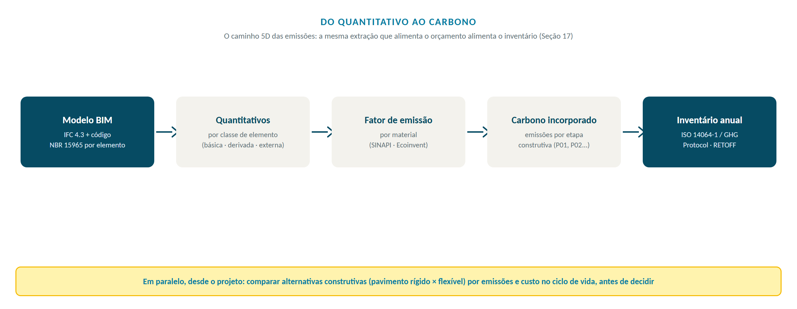
Métricas ESG via BIM: ambiental (emissões e resíduos, ISO 14064-1), social (segurança em projeto e acessibilidade, ISO 45001 e NBR 9050) e governança (rastreabilidade e transparência, ISO 19650 e 55001).
16 / Matriz PER × BIM de entregáveis e prazos
Esta matriz liga cada entregável do PER a um prazo e a um formato BIM.
A matriz a seguir cruza diretamente as obrigações do PER da Concessão Rota dos Sertões com os entregáveis BIM correspondentes, prazos e normas aplicáveis. É o instrumento de governança que garante o atendimento contratual por meio do BIM.
| Obrigação PER | Entregável BIM | Prazo PER | Norma |
|---|---|---|---|
| Projeto Executivo (Frente de Obras) | Modelo BIM + PEB + As Built digital | Conforme cronograma | ISO 19650; IFC 4.3 |
| As Built, Obras Emergenciais | Modelo As Built digital + IFC 4.3 | 30 dias após evento | Portaria SUROD 12/2025, art. 7º, V |
| Planejamento anual de envio de projetos | Lista mestre por zona, segmento e ano (SE-003) exportada do CDE | Até o 5º dia útil de cada ano (solicitação da GEENG) | Portaria SUROD 12/2025, art. 37 |
| Anteprojeto, Contorno urbano | Modelo BIM do anteprojeto | 6 meses após aprovação | ISO 19650-2 |
| Projetos Executivos (pós-anteprojeto) | Modelos BIM multidisciplinares | 12 meses (2 projetos) | ISO 19650-2 |
| Estoque de Melhorias | Modelo BIM do projeto | 18 meses (+6 c/ desapropriação) | Resolução ANTT 6.000/2022 |
| Cadastro Inicial | Modelo de Condições Existentes | Até 12º mês | ISO 19650-3; NBR 15965 |
| Relatórios de Monitoração (anuais, por tema: pavimento, OAE, terraplenos e outros) | Relatórios e dados de inspeção e monitoração codificados MON-OUT, com carga no subsistema SIGACO e entrega em SIG | Anual, até 30 dias após a avaliação de campo | PER Vol. I, item 4.4; Seção 9.4 |
| SIG, Sistema de Informação Gerencial | Base aerofotogramétrica + GPS; integração BIM×GIS | Até 12º mês | SIRGAS 2000; GeoBIM |
| SIGACO, Plano de Gestão de Ativos | AIR + estrutura do AIM | 9 meses | ISO 55001 |
| SIGACO, Inventário Inicial | Modelo de Condições Existentes → AIM | 12 meses | ISO 55001; NBR 15965 |
| SIGACO, Implantação dos Subsistemas | AIM integrado aos 10 subsistemas | 24 meses | ISO 55001 |
| RETOFF (mensal) | Relatório técnico-operacional-físico-financeiro + relatório IDS de conformidade dos modelos do período (a partir da Fase 2) | Mensal | Resolução ANTT 6.000/2022 |
| Planejamento de Obras (quinquenal/anual) | Cronograma 4D alinhado ao modelo | Conforme Res. 6.000/2022 | ISO 19650 |
| Inventário de emissões (GEE) | Quantitativos 5D → emissões incorporadas | Anual | ISO 14064-1 |
| PD-BIM (BIM Mandate ANTT) | Plano de Desenvolvimento BIM | 90 dias (Dec. SUROD 737/2025) | Decisão SUROD 737/2025 |
| PEB (BIM Mandate ANTT) | Plano de Execução BIM | 6 meses (Dec. SUROD 737/2025) | Decisão SUROD 737/2025 |
| Requisitos ISO 19650 (BIM Mandate) | EIR + estrutura de gestão da informação | 12 meses (Dec. SUROD 737/2025) | ISO 19650; Decisão SUROD 737/2025 |
| CDE (BIM Mandate ANTT) | Ambiente Comum de Dados operacional | 18 meses (Dec. SUROD 737/2025) | ISO 19650-1; Decisão SUROD 737/2025 |
17 / Formulários
Os formulários padronizam o que já é obrigação: nenhuma reunião sem pauta, nenhuma submissão sem checklist, nenhuma validação sem registro. A Figura 9 organiza os nove formulários pelo momento em que cada um entra em cena, do PEB antes de produzir ao handover no encerramento.
| Código | Formulário | Uso |
|---|---|---|
| FR-BIM-01 | Plano de Execução BIM (PEB), modelo | Elaborado pela Contratada |
| FR-BIM-02 | Solicitação de Mudança de Projeto (SMP) | Alteração de projeto durante a execução |
| FR-BIM-03 | Checklist de entrega de modelo IFC 4.3 | Controle de qualidade de entregáveis |
| FR-BIM-04 | Relatório de clash detection (BCF) | Análise de interferências |
| FR-BIM-05 | Termo de Aceite de Handover PIM → AIM | Encerramento do empreendimento |
| FR-BIM-06 | Proposta de PropertySet | Inclusão ou alteração na tabela mestra (Anexo 1.2) |
| FR-BIM-07 | Submissão IDS | Registro de validação de modelo (Seção 11.5) |
| FR-BIM-08 | Pauta de reunião de acompanhamento quinzenal | Gestão de contrato (Seção 10.2) |
| FR-BIM-09 | Pauta do Comitê de Gestão da Informação | Governança mensal (Seções 14 e 10.2) |
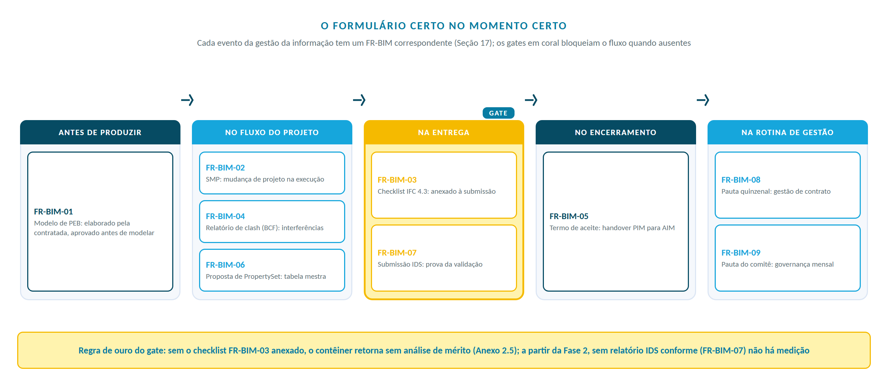
Os formulários estão disponibilizados no CDE, em versão editável, e são atualizados pela área de Gestão da Informação da Concessionária. Os formulários FR-BIM-08 e FR-BIM-09 acompanham este Caderno como arquivos independentes.
18 / Conclusão: lições e ações
Cinco lições e uma fila de ações. O Caderno fecha com o que precisa acontecer agora.
Cinco lições sustentam este Caderno:
Ações imediatas, com responsável e horizonte:
| Quem | Ação | Quando |
|---|---|---|
| Contratada | PEB pré-contratual aderente ao Anexo 3.4, com MIDP preliminar | Na licitação |
| Contratada | Mobilização, PEB contratual e reunião de início | Após a contratação |
| Concessionária | PD-BIM aprovado; biblioteca IDS e CDE operantes | 90 dias (BIM Mandate) |
| Concessionária | PEB e requisitos ISO 19650 estruturados e emitidos | 6 a 12 meses |
| Ambas as partes | Cadência de reuniões (FR-BIM-08/09) e gate FR-BIM-03 | Desde o primeiro contrato |
| Área jurídica | Manifestação sobre a autonomia de fluxo (Anexo 2.5, item 2.5.8) | Antes da vigência |
Em 502 km de sertão, cada elemento da rodovia terá um par digital: nasce no levantamento, cresce no projeto, é conferido pelo IDS, vive no SIGACO e envelhece com dados. Do terreno ao gêmeo digital, a informação deixa de ser documento arquivado e passa a ser ativo operado.
19 / Coletânea de anexos
Cada volume reúne anexos consultados pela mesma pessoa, na mesma ocasião. A organização segue a lógica temática da Coletânea Guias BIM ABDI-MDIC (2017), adaptada ao ciclo contratual da concessão: cada volume responde a uma pergunta do leitor. Os anexos são identificados por volume.número (Anexo 1.2 = volume 1, segundo anexo).
Como a informação é nomeada e estruturada: o código, as propriedades, as bibliotecas e a apresentação física do documento.
| Anexo | Conteúdo | Formato |
|---|---|---|
| Anexo 1.1 | Zoneamento do acervo de projetos (SE-003): zonas, segmentos, tramos, estrutura de pastas e metadados do CDE; lista mestre e KMZ das zonas | Arquivo independente + xlsx/kmz |
| Anexo 1.2 | PropertySets para Concessões Rodoviárias (TDI detalhado) | Arquivo independente |
| Anexo 1.3 | Codificação: código ANTT (Portaria SUROD 12/2025) e código de arquivo CCS, tabelas de tipos de obra, tipos de projeto, categorias e disciplinas, exemplos e gerador de código | Arquivo independente + xlsx |
| Anexo 1.4 | Padrão de apresentação: volumes por tipo de estudo ou projeto, documentos de protocolo e extensões aceitas (Portaria SUROD 12/2025) | Arquivo independente |
| Anexo 1.5 | Lista de materiais e bibliotecas BIM corporativas | CDE |
Como a informação é produzida e circula: requisitos de modelagem, entregáveis, ambientes de autoria e o fluxo no CDE até a aprovação.
| Anexo | Conteúdo | Formato |
|---|---|---|
| Anexo 2.1 | Tabela de Requisitos Mínimos de Modelagem BIM por fase | CDE |
| Anexo 2.2 | Tabela de entregáveis e formatos | CDE |
| Anexo 2.3 | Templates e ambientes de autoria CRS (neutros quanto ao fornecedor) | CDE |
| Anexo 2.4 | Fluxograma IFC 4.3 para infraestrutura rodoviária | CDE |
| Anexo 2.5 | Fluxo de trabalho documental no CDE e processo CRA (verificação, revisão e aprovação) | Arquivo independente |
Como se contrata e se organiza a execução: exigir no PEB, distribuir responsabilidades no RACI, capacitar as equipes.
| Anexo | Conteúdo | Formato |
|---|---|---|
| Anexo 3.1 | Modelo de PEB pré-contratual e pós-contratual (conteúdo consolidado no Anexo 3.4) | CDE |
| Anexo 3.2 | Matriz RACI de gestão da informação | CDE |
| Anexo 3.3 | Plano de capacitação em Engenharia Digital | CDE |
| Anexo 3.4 | Modelos de Plano de Execução BIM: pré-contratual (licitação), contratual (pós kick-off) e contratual simplificado (levantamentos de campo) | Arquivo independente |
O terreno como fonte de informação: levantamentos que alimentam a modelagem do existente. Recebe também os temas de campo que crescerem no futuro.
| Anexo | Conteúdo | Formato |
|---|---|---|
| Anexo 4.1 | Investigação de ativos enterrados (SUE): níveis de qualidade ASCE 38-22, utilidades típicas, fluxo de trabalho e representação IFC 4.3 | Arquivo independente |
A base comum de leitura: por que o BIM Nível 2 e que palavras o documento usa.
| Anexo | Conteúdo | Formato |
|---|---|---|
| Anexo 5.1 | Fundamentação conceitual do BIM Nível 2 (histórico, níveis de maturidade e referências de origem) | Arquivo independente |
| Anexo 5.2 | Glossário de Termos Técnicos, por família temática | Arquivo independente |
Os anexos em arquivo independente possuem ficha de identificação e revisão próprias, vinculadas a este Caderno, seguem a mesma identidade visual e são distribuídos em pastas por volume. A versão vigente de cada anexo, inclusive dos mantidos no CDE, prevalece sobre a referência aqui contida. Nesta revisão os anexos foram reorganizados em volumes e renumerados; a correspondência com a numeração romana anterior consta do registro de revisões.
20 / Referências normativas e bibliográficas
A elaboração e a aplicação deste Caderno BIM apoiam-se nos documentos listados a seguir, observadas as versões vigentes à data de cada contratação.
| Documento | Objeto |
|---|---|
| Lei nº 14.133, de 1º de abril de 2021 | Lei de Licitações e Contratos Administrativos, art. 19 prevê a adoção preferencial de BIM. |
| Decreto nº 10.306, de 2 de abril de 2020 | Estabelece o uso do BIM na execução direta e indireta de obras e serviços de engenharia da Administração Pública Federal, fases progressivas. |
| Decreto nº 11.888, de 22 de janeiro de 2024 | Institui a Nova Estratégia BIM BR e o Comitê Gestor da Estratégia BIM BR (presidido pelo MDIC). |
| Decreto nº 5.334, de 5 de maio de 2005 | Estabelece os referenciais planimétrico e altimétrico do Sistema Geodésico Brasileiro (SGB). |
| Documento | Objeto |
|---|---|
| Contrato de Concessão, Edital nº 1/2026 ANTT | Instrumento contratual da Concessão Rota dos Sertões; Anexo do PER e cláusulas de projetos, obras, SIG, SIGACO e entregáveis. |
| PER, Programa de Exploração da Rodovia, Volumes I e II | Estabelece diretrizes, parâmetros técnicos, frentes da concessão, prazos e entregáveis; exige Plano Executivo BIM nos projetos executivos. |
| Resolução ANTT nº 6.000, de 1º de dezembro de 2022 | Aprova a segunda norma do Regulamento das Concessões Rodoviárias (RCR 2), bens, obras e serviços. |
| Decisão SUROD nº 737, de 8 de julho de 2025 | Aprova o BIM Mandate para projetos, obras e serviços de engenharia das concessões rodoviárias federais, com prazos para PD-BIM (90 dias), PEB (6 meses), requisitos ISO 19650 (1 ano) e CDE (18 meses). |
| Portaria SUROD nº 12, de 26 de março de 2025 (alterada pelas Portarias SUROD nº 15/2025 e nº 122/2025) | Procedimento Operacional Padrão de análise de estudos e projetos de engenharia: volumes por tipo de projeto, documentos de protocolo, codificação de documentos (Anexo), extensões aceitas, planejamento anual de envio de projetos; revoga a Portaria SUINF nº 28/2019 (art. 40). |
| BIM Mandate ANTT, Revisão 01 (junho/2025) | Diretrizes para o Plano de Desenvolvimento BIM (PD-BIM): objetivos e 11 usos BIM, agentes, fluxogramas, requisitos técnicos (IFC 4+, SIRGAS 2000, CDE que centraliza todos os projetos, BEP por projeto) e cronograma de 6 a 72 meses. |
| Norma | Objeto |
|---|---|
| ABNT NBR ISO 19650-1:2022 (Versão Corrigida:2024) | Organização e digitalização da informação de obras, Gestão da informação usando BIM: Conceitos e princípios (OIR, PIR, EIR, AIR, LOIN, CDE). |
| ABNT NBR ISO 19650-2:2022 (Errata 1:2024) | Fase de entrega dos ativos (PIM, BEP, estados da informação, tarefas de gestão). |
| ISO 19650-3:2020 | Fase operacional dos ativos (AIM, AIR, gatilhos de atualização). |
| ISO 19650-4:2022 | Troca de informação. |
| ISO 19650-5:2020 | Abordagem orientada à segurança da informação (security-minded approach). |
| ISO 19650-6:2025 | Informação de saúde e segurança. |
| ABNT NBR ISO 12006-2:2018 | Organização da informação da construção, Estrutura para classificação (base da NBR 15965). |
| ABNT NBR 15965 (Partes 1 a 7) | Sistema de classificação da informação da construção (terminologia, objetos, processos, recursos, resultados, unidades). |
| ISO 16739-1:2024 (IFC 4.3) | Industry Foundation Classes, esquema de dados neutro e aberto para construção e infraestrutura (IfcRoad, IfcBridge, IfcAlignment, IfcPavement). |
| ISO 29481-1 / -2 | Information Delivery Manual (IDM), metodologia e formato de entrega de informação. |
| IDS v1.0 (buildingSMART International, 2024) | Information Delivery Specification, padrão aberto XML que operacionaliza o LOIN (ISO 19650-1) em regras verificáveis automaticamente contra modelos IFC, inclusive IFC 4.3. Aprovado como Final Standard em junho de 2024. |
| Norma / referência | Objeto |
|---|---|
| ISO 55001:2024 | Sistemas de gestão de ativos, requisitos (objetivo do SIGACO da concessão). |
| ISO/IEC 30173:2023 | Gêmeo Digital, conceitos e terminologia. |
| ISO 14224:2016 | Coleta e troca de dados de confiabilidade e manutenção (modelagem de desempenho). |
| ABNT NBR 13133:1994 | Execução de levantamentos topográficos. |
| ABNT NBR 6484 | Sondagem de simples reconhecimento com SPT, para fins de engenharia geotécnica. |
| ABNT NBR 14166-1/-2 | Referenciais geodésicos / RRCM. |
| ABNT NBR 15935:2011 | Aplicação de métodos geofísicos (inclui georadar, GPR). |
| ABNT NBR 5410:2008 / NBR 14039 / NBR 5419:2015 | Instalações elétricas de baixa e média tensão; proteção contra descargas atmosféricas. |
| NR-10 | Segurança em instalações e serviços em eletricidade. |
| ASCE/UESI/CI 38-22 / 75-22 | Investigação e documentação de utilidades existentes (SUE), Quality Levels A a D. |
| PAS 128:2022 (BSI) | Especificação para detecção, verificação e localização de utilidades subterrâneas. |
| IBGE, Resolução PR nº 01/2015 / Resolução PR nº 22/1983 | Especificações para levantamentos geodésicos; SIRGAS 2000 (EPSG:4674) como referencial oficial. |
| DNIT, Instruções de Serviço para estudos topográficos rodoviários | Diretrizes técnicas para levantamentos em rodovias federais. |
A literatura científica que fundamenta os conceitos de maturidade, gestão da informação, modelos federados, IFC 4.3 rodoviário e CDE está consolidada na base de conhecimento da Engenharia Digital, no CDE.
| Documento | Objeto |
|---|---|
| ABDI; MDIC. Coletânea Guias BIM (Guias 01 a 06). Brasília: ABDI/MDIC, 2017 | Diretrizes nacionais para processo de projeto, classificação da informação, quantificação, contratação e implantação de BIM; inspira a organização temática da Coletânea de Anexos (Seção 19). |
Fim do Caderno BIM, Concessão Rota dos Sertões · R02 · Outubro/2026
Anexos / cinco volumes
Zoneamento (1.1), Property Sets (1.2), Codificação CCS e gerador (1.3), Padrão de apresentação (1.4)
Volume 2Fluxo do CDE e CRA (2.5)
Volume 3Modelos de PEB (3.4)
Volume 4Investigação de ativos enterrados, SUE (4.1)
Volume 5BIM Nível 2 (5.1), Glossário (5.2)
O Caderno vale pelo que vira prática: um código em cada arquivo, um estado em cada entrega, um modelo que a operação consegue usar. Dúvida sobre uma regra? A versão oficial em .docx e .pdf decide. Sugestão de melhoria? Registre no log de revisão e fale com a Gestão da Informação.
Esta página reproduz o Caderno BIM CGI-CCS-01 R02. Em divergência, valem o .docx e o .pdf assinados.